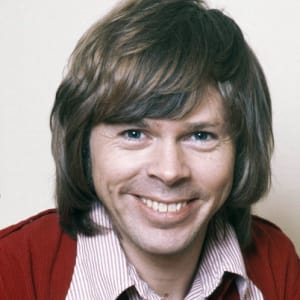
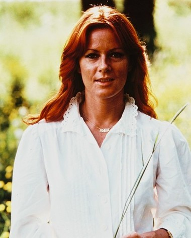

Members
Benny Andersson
Göran Bror Benny Andersson was born December 16, 1946 in Stockholm, and spent much of his youth in the suburb of Vällingby. Music entered Benny’s life when he was very young. At the age of six he got his first accordion and started playing together with his father Gösta and his grandfather Efraim. It was the early Eighties. Benny Andersson had been busy for a long time. In the Sixties he was a member of Sweden’s most popular rock band. In the Seventies he was a member of the world’s most popular pop band. But by 1983, the Scandinavian ‘teen idol’ status he’d enjoyed as a member of The Hep Stars and the multi-million sales that came his way as a member of ABBA – well, they were old news for this inveterate songwriter who’d been playing since he was six years old. ‘Straight after ABBA,’ Andersson remembers, ‘I thought, I want to make a real record one of these days.’ Now Andersson, who with lyricist partner Björn Ulvaeus crafted all of ABBA’s hits, isn’t decrying the songs that taught the world to sing; the records that, to date, have sold some 370 million copies; the canon that formed the heart and soul of Mamma Mia!, the hit musical-turned-record-breaking, Titanic-sinking blockbuster film. What he’s saying is that he wanted to make a record that took him back to his roots. Back to the six-year-old boy in Stockholm, playing traditional folk songs with his father and grandfather, all three of them on the accordion. ‘I wanted to make music based on the Swedish folk tradition, but with new songs written by me.’
Björn Ulvaeus
Björn Kristian Ulvaeus was born in Gothenburg on April 25, 1945. When he was six years old the family moved to the small town of Västervik, and this is where Björn grew up. In the mid-Fifties Björn fell in love with rock’n’roll and skiffle. By the early Sixties he was a member of a folk group called the West Bay Singers. In 1963 they entered a talent contest arranged by Swedish radio. This led to discovery by songwriter and publisher Stig Anderson and his partner, Bengt Bernhag. Stig and Bengt had recently started a record company called Polar Music. The band acquired a new name, the Hootenanny Singers, and quickly became one of Sweden’s most popular groups of the Sixties. In 1966, Björn had a chance meeting with Benny Andersson, himself a member of Sweden’s number one pop group, The Hep Stars. They hit it off and wrote their first song together, ’Isn’t It Easy To Say’. Björn recorded a couple of solo singles in the late Sixties, at which point he also started concentrating more on his collaboration with Benny Andersson. In 1970 the pair started releasing records as a duo and also staged a cabaret show together with their fiancées, Agnetha Fältskog and Anni-Frid Lyngstad. On July 6, 1971, Björn and Agnetha got married.
Agnetha Fältskog
Agnetha Åse Fältskog was born on April 5, 1950 in the town of Jönköping in Sweden. Music came to Agnetha early in life: at the age of six she wrote her first song, ’Två små troll’ (”Two Little Trolls”). Agnetha was 16 when she started singing in a dance band called Bernt Enghardts. A song she wrote for the band, ’Jag var så kär’ (”I Was So In Love”), became her first single. This 1967 debut record became a number one hit on the Swedish charts. The following few years were followed by several singles, albums and even a number of German-language recordings released in West Germany. In 1969 Agnetha became romantically involved with Björn Ulvaeus and they got engaged in April 1970. In November the pair staged a cabaret show together with Björn’s songwriter partner, Benny Andersson, and his fiancée, Anni-Frid Lyngstad. On July 6, 1971, Björn and Agnetha got married.In early 1972, Agnetha auditioned for the part of Mary Magdalene in the Swedish stage version of the musical ’Jesus Christ Superstar’. She got the part, although two other girls alternated with her during the course of the show’s duration. After that, and for a decade onwards, Agnetha was mainly occupied by her work with ABBA. During this period she also released her Swedish-language solo album Elva kvinnor i ett hus (”Eleven Women In One House”). All music had been written and produced by Agnetha herself (except her Swedish version of ABBA’s ’SOS’), with lyrics by Bosse Carlgren.
Anni-Frid Lyngstad
Anni-Frid Synni Lyngstad, better known simply as Frida, was born November 15, 1945 in Ballangen outside of Narvik, Norway. Her father was Alfred Haase, a German soldier, and her mother, Synni Lyngstad, was a Norwegian teenage girl. Frida’s father left Norway before Frida was born, and was thought to have vanished when his ship was sunk on the way back to Germany. 18 months after Frida’s birth she moved to Sweden with her grandmother, Agny. Synni soon joined them, but tragically, less than two years after Frida was born, her mother died. Frida grew up with her grandmother in Torshälla, just outside of the town of Eskilstuna. At the age of 11 she made her stage debut at a Red Cross charity event. Two years later, she started working as an underage vocalist in a dance band, and performed with different bands for a decade. She met her first husband, Ragnar Fredriksson, in 1961. Together they had two children: Hans, born in 1963, and Lise-Lotte, born in 1967. On September 3, 1967, Frida won a talent contest in Stockholm. Immediately after her victory she appeared on national television singing her winning song. Soon afterwards Frida signed to EMI records. Frida didn’t have much commercial success as a recording artist up to the early Seventies, but she was a fairly well-known stage artist. In 1970 she was part of a cabaret show together with her fiancé, Benny Andersson, along with Björn Ulvaeus and his fiancée, Agnetha Fältskog.

Follow Us: